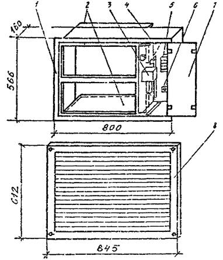
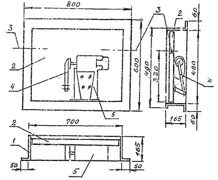
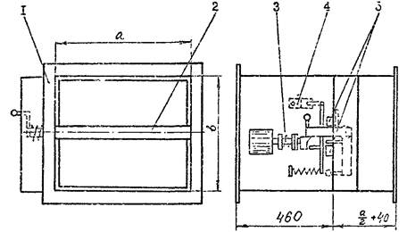
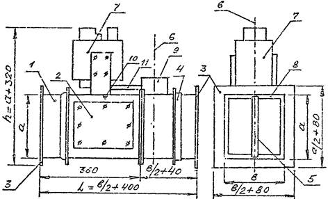

ПРОЕКТНЫЙ
ИНСТИТУТ
ПРОМСТРОЙПРОЕКТ
Акционерное общество
Пособие 15.91 к СНиП 2.04.05-91*
Противодымная защита при пожаре и вентиляция
подземных стоянок легковых автомобилей
Главный инженер И.Б. Львовский
Главный специалист Б.В. Баркалов
Рекомендовано к изданию решением секции Технического Совета АО Промстройпроект.
Пособие 15.91 к СНиП 2.04.05-91*. Противодымная защита при пожаре и вентиляция подземных стоянок легковых автомобилей. (Промстройпроект, М., 1995, стр. 41).
Пособие 15.91 к СНиП 2.04.05-91* (Далее СНиП). "Противодымная защита при пожаре и вентиляция стоянок легковых автомобилей" разработано институтом Промстройпроект (канд. техн. наук Б.В. Баркалов) с использованием материалов АО Моспроект 1 (инж. Г.И. Стомахина).
В "Пособии" рассмотрены вопросы проектирования противодымной защиты и вентиляции 1 - 5-этажных подземных стоянок легковых автомобилей для г. Москвы.
В "Пособии" не рассматриваются вопросы проектирования стоянок легковых автомобилей с двигателями, работающими на сжатом природном к сжиженном газе.
"Пособие" согласовано Московской Государственной вневедомственной экспертизой (№ МГЭ-298 от 22.05.95), а также Управлением Государственной противопожарной службой ГУВД г. Москвы (№ 25/8/509 от 24.02.95).
"Пособие" предназначено для специалистов в области отопления и вентиляции.
Рецензент инженер И.К. Васильев
Технический редактор К.Л. Полухина
1.1. Пожарная опасность стоянки легковых автомобилей отнесена к категории В, [2] поэтому средний удельный вес дыма при пожаре принят по СНиП 2.04.05-91* (далее СНиП) γ = 5 Н/м3 и плотность 0,51 кг/м3.
1.2. Высота помещений [2] в местах проезда и храпения автомобилей и на путях эвакуации людей должна быть не менее 2 м от пола до выступающих конструкций и подвесного оборудования. При высоте помещения 2,5 м вертикальные завесы ограждающие дымовые зоны не должны спускаться ниже 2,0 м от пола. Глубина "резервуаров дыма" при этом будет зависеть от высоты конструкций перекрытия стоянки, и, как правило, будет не более 0,5 м.
1.3. Расход дыма, кг/ч, удаляемого из резервуара дыма над загоревшимся автомобилем, следует определять по периметру очага пожара, за который принимается периметр большего из размещаемых автомобилей с ограничением по приложению 22 к СНиП, где определен предельный периметр очага пожара - 12 м. Расход дыма рекомендуется рассчитывать [3 и 4] по формуле СНиП:
|
Gд.1 = 676,8∙Пn∙У1,5∙Ks, |
(1) |
где: Пn - периметр очага пожара, (не более 12 м);
У - расчетный средний уровень стояния дыма от пола помещения, м, принимаемый в данном случае 2 м;
Ks - коэффициент равный 1,2 к расчетному расходу дыма и площади вытяжных шахт, фрамуг в окнах и фонарях, для систем, действующих за счет естественного побуждения тяги, при их совместной работе со спринклерной системой пожаротушения. Для вытяжных систем с искусственным побуждением (вентиляторы, эжекторы и др.) Ks = 1.
Максимальный расход дыма, для стоянок легковых автомобилей, при Ks = 1, кг/ч, равен:
Gд.1 = 676,8∙12∙21,5∙1 = 22970 кг/ч, или 6,38 кг/с.
1.4. Время заполнения резервуара дымом согласно п. 5.8 СНиП рассчитывается (с) по формуле:
где: А - площадь резервуара дыма, м2;
У - средний уровень стояния дыма от пола помещения, принимается 2 м;
Н - высота помещения, м;
Пn - периметр очага пожара, м.
1.5. При относительно малой плотности потока эвакуирующихся (0,05 м2/м2) старость людей по ГОСТ 12.1.004-91 [6] равна 1,7 м/с. Нормативные 40 м расстояния [2], п. 3.24 до ближайшего эвакуационного выхода люди пройдут за 40/1,7 = 24 с. Максимальная площадь резервуара дыма А м2, при высоте его бортов 0,5 м, свободной высоте помещения 2,5 м и максимальном расходе дыма по формулам (1) и (2) при t = 24 с и Пn = 12 м, могущего принять образующий дым равна
А = 24∙12/[(2-0,5 - 2,5-0,5)∙6,39] = 600 м2.
При балансе поступления и удаления дыма из резервуара, поддерживаемом средствами тушения пожара, распространение дыма по помещению относительно продолжительное время будет сдерживаться емкостью резервуара и работой вытяжной системы ВД1 или ВД2, что обеспечит благоприятные условия для тушения пожара и эвакуации людей и автомобилей.
1.6. Максимальная площадь этажа подземной стоянки автомобилей, согласно п. 3.20 [2], равна 3000 м2. В соответствии с п. 5.7 СНиП "Помещения площадью более 1600 м2 необходимо разделять на дымовые зоны, учитывая возможность возникновения пожара в одной из них. Каждую дымовую зону в целях локализации пожара следует, как правило, ограждать плотными вертикальными свесами с потолка или завесами из негорючих материалов, спускающимися с потолка (перекрытия) к полу, но не ниже 2,5 м от него, образуя под потолком (перекрытием) "резервуары дыма".
Для повышения надежности противодымной защиты подземных стоянок легковых автомобилей устройство резервуаров дыма обязательно; максимальный нормативный размер площади резервуара дыма принять 800 м2. Этажи стоянок следует делить на дымовые зоны с устройством в каждом по два или несколько резервуаров дыма, площадью не более 800 м2 каждый. Это обеспечит в начальной стадии пожара задымление не более половины площади этажа.
1.7. Для эффективного использования емкости резервуара дыма в верхней части вытяжного воздуховода, прокладываемого внутри резервуара, предусматриваются дымоприемные отверстия - по одному на каждые 100 м2 площади резервуара, если глубина резервуара менее 1 м и на каждые 200 м2 при большей глубине резервуара. Площадь отверстия определяется соответствующей частью расчетного расхода дыма и массовой скоростью всасывания не больше 10 кг/(с∙м2). Расстояние любого дымоприемного отверстия от края резервуара не должно превышать 10 м.
1.8. В торце каждого резервуара дыма (рис. 2 и 3) на вытяжном воздуховоде следует предусмотреть дымовой клапан с проходным сечением, рассчитанным на расход дыма, определенный по формуле (1), при массовой скорости дыма не более 10 кг/(с∙м2). К одному вентилятору допускается присоединять не более 4-х резервуаров дыма, общей площадью не более 3000 м2 на каждом этаже.
Данные о дымовых клапанах приведены в приложениях 1 - 3.
1.9. Противодымная вытяжная вентиляция сблокирована с автоматической пожарной сигнализацией. Предусматривается автоматическое дистанционное и ручное управление. При загорании одного из автомобилей должен автоматически открываться дымовой клапан в резервуаре дыма, накрывающем данный автомобиль и автоматически включаться дымовой вытяжной вентилятор системы этажа, на котором произошел пожар. При появлении дыма в другом резервуаре (или резервуарах) должны автоматически открываться дымовые клапаны, присоединяя их к вытяжной системе.
1.10. Системы дымоудаления обслуживают: ВД1 - 1, 2, 3 этажи, ВД2 - 4, 5 этажи стоянки и должны иметь огнестойкий вентилятор и систему огнестойких воздуховодов (предел огнестойкости не менее 1 ч) с ответвлениями к каждому резервуару дыма.
Вытяжные вентиляторы дыма стоянки следует разместить:
а) для отдельно расположенной многоэтажной подземной стоянки - на верхнем ее этаже;
б) для подземной стоянки, расположенной под зданием - на верхнем этаже этого здания.
Воздуховоды системы дымоудаления для взаимозаменяемости соединяются коллектором перед вентилятором. Коллектор следует разделить дымовыми клапанами (см. п. 1.21) по схеме на рис. 1 для автоматического включения присоединенного вентилятора соседней системы при аварийной остановке основного (см. приложения 2).
Для одноэтажных подземных стоянок рекомендуется предусматривать установку резервного вентилятора.
Шахты для выброса дыма при пожаре, не совмещенные с выбросными шахтами постоянно действующей вытяжной вентиляции, следует размещать так, чтобы дым из них не попадал в окна жилой застройки. Высота таких шахт должна быть не менее 2 м от уровня земли и расстояние не менее 4 - 6 м от жилой застройки.
Шахты для выброса дыма, совмещенные с выбросами постоянно действующей вентиляции следует размещать в соответствии с требованиями п. 3.7 Пособия.
Рис. 1. Пятиэтажная
подземная стоянка для легковых автомобилей.
Принципиальные схемы противодымной, приточной и вытяжной вентиляции.
При пересечении перекрытий устанавливаются огнезадерживающие клапаны
(на схеме не показана).
П1 ... П5 - приточные системы общеобменной вентиляции;
B1 … B5 - вытяжные системы общеобменной вентиляции;
ПД1 ... ПД6 - приточные системы противодымной вентиляции;
ВД1, ВД2 - вытяжные системы противодымной вентиляции;
К1 ... К6 - дымовые клапаны;
P1, Р2 - резервуары дыма.
1.11. В подземные стоянки легковых автомобилей, имеющие два этажа и более и стоянки, лестничные клетки которых связывают подземную и надземную части стоянок или подземную стоянку с надземными этажами здания другого назначения, следует подать приточный наружный воздух для создания избыточного давления:
а) в лифтовых и коммуникационных шахтах*);
б) в незадымляемых лестничных клетках 2-го типа и тамбурах-шлюзах при них, если таковые предусмотрены строительным проектом;
в) в тамбурах-шлюзах при незадымляемых лестничных клетках 3-го типа;
г) в пандусах, соединяющих этаж пожара с наружным пространством при открытых воротах для выезда автомобилей;
д) в тамбурах-шлюзах при пандусах для автомобилей и других тамбурах-шлюзах, предусмотренных строительным проектом.
Примечание. Тамбур-шлюз - помещение, имеющее две двери или двое ворот, когда одна дверь или ворота открыты, другая дверь или ворота должны автоматически закрываться.
______________
*) Подача воздуха в коммуникационные шахты, предусматривается по получении данных о наличии в них неплотностей с указанием и мест и площади, м2.
Рис. 2. План на отм. пола 1-го этажа.
Входы и выходы, показанные на плане, соответствуют отм. 0.00.
Р1 и Р2 - резервуары дыма; 3 - свесы с потолка; 4 и 5
- изолированные лифты;
5 и 7 - изолированные лестничные клетки; 8 - выезд с первого этажа;
9 - выезд со второго и третьего этажей; 10 - выезд с четвертого и пятого
этажей;
11 - тамбуры-шлюзы на въезд; 12 - тамбуры-шлюзы на входах; 13 - вход;
14 - приточный воздуховод 0,5×0,5 м; 15 - выпуск воздуха в стороны
рассеянными
струями с отм. 2 м от пола этажа до низа воздухораспределителей
Рис. 3.
1 и 2 - дымовые клапаны; Р1 и P2 - резервуары дыма;
3 - приточный воздуховод; 4, 5 и 6 - расчетные участки воздуховодов.
1.12. Расход наружного воздуха для противодымной защиты следует рассчитывать на обеспечение давления воздуха по п. 1.14, по отношению к давлению наружного воздуха или давлению в помещениях, в которые ведут двери или проемы из защищаемых сооружений или помещений, в том числе давления:
а) в верхней части лифтовых шахт при закрытых дверях этих шахт на всех этажах, кроме верхнего (давление воздуха внутри лифтовых шахт практически постоянно, в связи с малой скоростью движения воздуха в них);
б) в верхней части незадымляемых лестничных клеток 2-го типа при открытых дверях на этаже пожара и закрытых дверях на всех других этажах лестничной клетки. Двери из лестничных клеток наружу при этом открыты;
в) в тамбурах-шлюзах перед дверями незадымляемой лестничной клетки 3-го типа. На этаже пожара одна дверь тамбур-шлюза открыта, другая закрыта. На всех остальных этажах обе двери тамбур-шлюза закрыты.
Примечание. Пунктом 1.12 представлен расчетный вариант положения дверей. Фактически все двери лестничной клетки будут кратковременно открываться.
1.13. При расчете противодымной защиты следует принимать:
а) температуру наружного воздуха и скорость ветра для холодного и теплого (см. п. 2.7 Пособия) периода года (параметры Б); скорость ветра принимать по прил. 8 к СНиП, но не более 5 м/с;
б) направление ветра со стороны противоположной главному эвакуационному выходу людей из здания;
в) избыточное давление воздуха и шахтах лифтов, в незадымляемых лестничных клетках 2-го типа и тамбурах-шлюзах с дверями или воротами, ведущими наружу - по отношению к давлению наружного воздуха на наветренной стороне здания принимать не менее 20 Па;
г) давление на закрытые двери на путях эвакуации не должно превышать 50 Га (регулируется клапаном избыточного давления);
д) при двухстворчатых дверях в расчет принимать большую створку; ворота для автомобилей на этаже пожара - открытые полностью;
е) кабины лифтов при пожаре должны находиться на верхнем этаже и двери в лифтовую шахту открыты.
1.14. Расход наружного воздуха, подаваемого в пандусы, лифтовые шахты, лестничные клетки, тамбуры-шлюзы, вестибюль или другие защищаемые давлением воздуха помещения, расположенные перед въездными воротами или входными дверями стоянки рассчитывается на противодавление наружного воздуха, определяемое по формуле, Па:
где: V - скорость ветра по прил. 8 к СНиП, но не более 5 м/с;
ρ - кг/м3, плотность воздуха в холодный период года (параметры Б). При определении давления воздуха при расчете вентилятора ρ принимать для теплого периода года (параметры Б).
Расход воздуха для открытых ворот и входных дверей, не имеющих Z-образных тамбуров, кг/ч, определяется по формуле:
|
(4) |
при наличии Z-образного тамбура для входных дверей:
|
(5) |
где: АB, АД - площадь ворот и дверей, м2;
Р - по формуле (3).
При наличии двух последовательно расположенных дверей или ворот одинаковой площади расчет по формулам (4) и (5) ведется с коэффициентом K = 0,707, а - трех и более - с коэффициентом K = 0,58 [7].
1.15. Удельный расход воздуха на 1 м длины притвора закрытой двери или ворот при давлении нагнетаемого воздуха в 1 Па (для обеспечения прижима к притвору), Gy = 8 кг/(м∙ч), а если давление воздуха отжимает их от притвора, то расход - удваивается, т.е. Gy = 16 кг/(м∙ч).
При этих расчетах по данным [4] принята щель шириной 1,8 мм в первом случае и 3,6 мм во втором. На качество изготовления и износ дверей и ворот принят коэффициент 1,2.
Расход воздуха через неплотности закрытых дверей и ворот рассчитывается по формуле, кг/ч:
|
GД,В = Gy∙lД,В∙ΔР0,5, |
(6) |
где: lД,В - длина притвора дверей или ворот, м;
ΔР - разность давлений воздуха по обе стороны закрытых дверей или ворот, Па.
1.16. Расход наружного воздуха, компенсирующий утечки через неплотности между краями кабин лифтов и проемами в лифтовой шахте, а также через вентиляционные решетки кабин лифтов следует определять по данным об этих неплотностях полученным от изготовителей лифтов или от монтажной организации. При отсутствии этих данных расчет допускается вести по формуле, кг/ч:
|
GЛ.О = (34∙l + 0,1)∙ΔРш0,5, |
(7) |
где: l - длина неплотности между краями кабины лифта и краями проема в лифтовой шахте, м;
0,1 - площадь живого сечения вентиляционной решетки в кабине лифта, м2;
ΔРш - разность давлений в верхней части лифтовой шахты и вне ее, определяемая по формуле, Па:
|
(8) |
где: Р - давление, определяемое по формуле (3).
1.17. Расход наружного воздуха через неплотности каждой из закрытых дверей лифтовых шахт, кг/ч, определяется по формуле:
|
Gш = 16∙lД ΔРш0,5, |
(9) |
где: lД - длина притвора двери лифтовой шахты, м;
ΔРш - разность давлений воздуха в лифтовой шахте по формуле (8).
1.18. Расход воздуха через закрытую дверь машинного отделения лифта, кг/ч:
|
Gз.л = 16∙lз ΔРш0,5, |
(10) |
где: lз - длина притвора двери, м;
ΔРш - по формуле (8).
1.19. Расход воздуха через открытую дверь лестничной клетки на этаже пожара, кг/ч:
|
(11) |
где: Ак - площадь большей створки двери, м2;
Нк - высота лестничной клетки, м;
Р - по формуле (3),
K - коэффициент равный 0,707 при двух последовательно расположенных дверях тамбура-шлюза, и K = 0,58 при трех последовательно расположенных дверях одного и того же размера:
1.20. Расход через закрытую дверь лестничной клетки:
|
Gк.з = 16∙lз∙ΔРк0,5, |
(13) |
где: lз - длина притвора двери, м;
Рк - по формуле (12).
1.21. Дымовые клапаны устанавливаются на всех вытяжных и всех приточных отверстиях систем дымоудаления и автоматически или дистанционно открываются во время пожара.
Неплотности притворов дымового клапана определяются расходом воздуха, просасываемого через закрытый клапан, Gк кг/ч; неплотности должны приниматься по данным завода изготовителя, но расход не должен превышать нормативной величины по СНиП:
где: Aк - площадь полотна клапана, м2;
ΔРз - разность давлений газов по обе стороны клапана, Па.
Примечание. Данные о дымовых клапанах заводского изготовления и формулы для расчета расходов просасываемого воздуха через закрытый клапан приведены в приложениях 1 - 3 к Пособию или в каталоге фирмы SCHAKO [17].
1.22. Пуск в действие систем противодымной защиты и отключение всех вытяжных вентиляционных систем должен осуществляться автоматически, дистанционно и от кнопок ручного пуска, устанавливаемых на въезде на каждый этаж автостоянки, на лестничных площадках на этажах, в лифтовых холлах и в тамбурах-шлюзах и на центральном пульте.
1.23. Предел огнестойкости транзитных воздуховодов и шахт дымоудаления должен быть не менее 1 ч, а клапанов не менее 0,6 ч.
Огнестойкость вентиляторов дымоудаления должна быть не менее 1 ч, при температуре газов 600 °С.
1.24. Приточный воздух при пожаре выпускается в защищаемые сооружения (лифтовые шахты и др.) через автоматически открывающиеся дымовые клапаны. Данные о дымовых клапанах приведены в приложениях 1 и 3 к Пособию.
1.25. Вытяжные и приточные системы дымозащиты согласно СНиП должны монтироваться из воздуховодов класса П (плотные) и снабжаться при необходимости компенсаторами линейного удлинения при нагревании.
1.26. Помещения, имеющие автоматическую установку пожаротушения и (или) автоматическую пожарную сигнализацию должны быть оборудованы дистанционными устройствами управления пожаротушением, размещенными вне обслуживаемых ими помещений (СНиП 2.04.09).
Пример 1. Противодымная защита подземной 5-ти этажной стоянки легковых автомобилей на 125 мест (рис. 2). Площадь каждого этажа стоянки 1200 м2, высота от пола до пола 2,8 м, свободная высота 2,5 м. Стоянка расположена в Москве. Имеется короткий пандус (№ 1) для въезда автомобилей на первый подземный этаж и два изолированных пандуса для въезда на 2-ой и 3-ий этажи (пандус № 2), а на 4-ый и 5-ый этажи - пандус № 3; два пассажирских лифта и две лестничные клетки. Принято, что пожар произошел на самом нижнем 5-ом этаже, где загорелся один автомобиль. Между 3-ем и 4-ым этажами стоянка разделена огнестойким перекрытием.
Решение. 1. Каждый этаж стоянки автомобилей (рис. 3) делим на две дымовых зоны 600 и 500 м2 (поз. P1 и Р2) высотой 0,5 м, прокладываемым по колоннам (поз. 3) на расстоянии 2,0 м, от пола, образуя два "резервуара дыма" емкостью 300 и 250 м3.
2. Периметр очага пожара согласно СНиП принимается по максимальным габаритам большего из автомобилей, в данном примере принимаем максимальный - 12 м. Соответствующая площадь должна обслуживаться одной группой сопел спринклерной системы пожаротушения. Расход дыма по формуле (1) равен:
GД.1 = 676,8∙12∙21,5 = 22970 кг/ч.
3. Время заполнения одного из двух резервуаров дымом рассчитываем по формуле (2):
t = 6,39∙600∙(2-0,5 - 2,5-0,5)/12 = 24 с.
За 24 с, согласно п. 1.5 Пособия люди могут пройти 40 м, что согласно п. 3.24 МГСН 5.01-94 соответствует нормативному расстоянию до ближайшего эвакуационного выхода из зала стоянки автомобилей при свободном от дыма втором резервуаре. По данным [15] огонь занимает всю площадь очага пожара не менее чем за 2 мин.
Примечание: Расход дыма зависит от размеров размещаемых автомобилей, для которых предназначена стоянка. Так для автомобилей длиной 3 м, периметр очага пожара можно принять (3 + 2)∙2 = 10 м и расход дыма:
GД.1 = 676,8∙10∙21,5 = 19142 кг/ч.
При этом время заполнения резервуара дымом будет равно 50 с, а обоих резервуаров 100 с - при 3-х м свободной высоты стоянки.
4. Дальнейшие расчеты дымоудаления с помощью вытяжной вентиляции связаны с расчетом системы вытяжных воздуховодов, которые приведены во втором разделе Пособия.
Для сведения баланса по вытяжкой и приточной противодымной вентиляции здесь приводятся итоги по расходам дыма из примера 2 второго раздела:
а) расход дымовых газов (с учетом подсосов через неплотности), удаляемых из помещения равен 6,633 кг/с или 23879 кг/ч или по стандартному воздуху 19900 м3/ч,
б) воздухообмен по вытяжке при пожаре равен:
n = 19900/(1200∙2,5) = 6,6 1/ч.
5. Приточная противодымная вентиляция в стоянке проектируется для создания избыточного давления воздуха, препятствующего распространению дыма по этажам, определяемого по формуле (3), Па:
Р = 0,7∙42∙1,429 + 20 = 36 Па.
6. Принято, что ворота тамбура-шлюза (рис. 2, поз. 10) для выезда из пятого этажа наружу, площадью 3,3∙2,4 = 7,92 м2 открыты. В них подается приточного воздуха по формуле (4):
GB = 2875∙0,58∙7,92∙360,5 = 79200 кг/ч.
K = 0,58 в связи с наличием 3-х последовательно расположенных ворот или двух ворот и водяной завесы.
7. Расход воздуха через неплотности закрытых ворот в 2-х тамбурах-шлюзах (рис. 2 поз. 8, 9) в формуле (6) и п. 1.15:
GД.В = (8∙11,4 + 16∙11,4)∙360,5∙2 = 3283 кг/ч.
Воздух в эти тамбуры-шлюзы подается только при пожаре от системы ПД2 дросселируя ее производительность или используя полную производительность, создавая подпор в пандусах № 2 и № 3.
8. Расход приточного воздуха через неплотности лифтов, в т.ч.:
а) расход, компенсирующий утечки через неплотности по краям двух кабин лифтов, по формуле (7):
GЛ.О = (34∙7,7∙2 + 0,2)∙(35 + 20)0,5 = 3920 кг/ч;
б) расход приточного воздуха через 8 закрытых дверей лифтовых шахт по формуле (9):
Gш = 16∙8∙8∙(36 + 20)0,5 = 7660 кг/ч;
в) через 3 наружных двери, закрытые во время пожара:
GДВ = 16∙8∙3∙360,5 = 2300 кг/ч;
г) через одну открытую дверь на этаже пожара на 50 % времени:
GДВ = 2875∙1,6∙0,5∙560,5 = 17200 кг/ч;
д) через закрытую дверь машинного отделения лифтов по формуле (10):
Gм = 16∙5,6∙560,5 = 670 кг/ч;
е) через два тамбур-шлюза для прохода людей при пожаре:
250∙1,2∙2 = 600 кг/ч.
9. Всего через лифтовые шахты гаража уходит наружу воздуха:
G = 3920 + 7660 + 2300 + 17200 + 670 + 600 = 32350 кг/ч или 27000 м3/ч.
10. Расход приточного воздуха через открытую дверь лестничной клетки на этаже пожара, по формуле (11):
Gк.о = 2875∙1,6∙(36 + 2,1∙15/2 + 20)0,5 = 38964 кг/ч,
а с учетом второй открытой двери тамбура-шлюза:
38964∙0,707 = 27547 кг/ч.
11. Расход через четыре закрытые двери лестничной клетки при lз = 5,6 м по формуле (13):
Gк.з = 16∙4∙5,6∙(36 + 2,1∙15/2 + 20)0,5 = 3035 кг/ч,
12. Всего в лестничный узел предусмотрено подать:
Gл.х = 27547 + 3035 + 600 = 31182 кг/ч, или 26000 м3/ч.
В тамбуры-шлюзы на входе в лестничные клетки воздух подается от систем ПД5 или ПД6 - 600 кг/ч.
13. Всего по предыдущему в пандус на этаже пожара предусмотрено подать 79200 кг/ч или 66000 м3/ч стандартного воздуха.
В два других тамбура-шлюза в пандусах предусмотрено подать 3283 кг/ч или 2135 м3/ч стандартного воздуха, согласно п. 7 из систем ПД1 или ПД2, всего 79200 + 3283 = 82483 кг/ч.
14. Общий расход приточного воздуха во время пожара с учетом работы приточных систем на этажах, где нет пожара, по примеру 3:
Gоб = (82483 + 31182 + 32350)/1,2 + 4∙6000 = 145680 м3/ч,
что по отношению к объему здания составит:
145680/(5∙1200∙2,5) = 9,7 1/ч.
Вытяжная вентиляция при пожаре удаляет из здания с учетом работы одной вытяжной системы на этаже пожара, по примеру 3:
GВ = 19900 + 6000 = 25900 м3/ч,
Превышение притока над вытяжкой составляет:
145680 - 25900 = 119780 м3/ч, или 8,0 1/ч по всему объему стоянки.
Практически, приточный воздух будет выдавливаться через пандусы и наружные двери здания.
15. Воздушный баланс на этаже пожара.
При работающей вытяжной вентиляции удаляет с этажа пожара 25900 м3/ч.
Приток поступает через открытую дверь лестничной клетки или через открытую дверь пожарного лифта; открыта одна или другая двери на 50 % времени, т.е. от своей полной производительности:
- через открытую дверь пожарного лифта 17200 кг/ч или 14300 м3/ч;
- через открытую дверь лестничной клетки 27547∙0,5/1,2 = 11480 м3/ч.
Баланс: Сб = -19900 - 6000 + 14300 = -11600 м3/ч или -11600/1200∙2,5 = -3,87 1/ч.
Разряжение в помещении этажа пожара можно регулировать открытием дверей лифтовой шахты или лестничной клетки.
16. Согласно приведенным расчетам для противодымной защиты стоянки легковых автомобилей следует предусмотреть:
а) системы ВД1 и ВД2 - вытяжные для удаления дыма из "резервуаров дыма", сначала - под которым произошел пожар, а затем и из второго. Производительность каждой из систем: 23879/0,524 = 45570 м3/ч. Температура дыма 400 °С.
б) системы ПД1 и ПД2 - приточные производительностью по 1,05∙66000 = 69300 м3/х предназначены для подачи воздуха в пандус, сообщающийся с этажом пожара, и в тамбуры-шлюзы в этом и 2-х других пандусах. Вентиляторы системы сблокировали между собой (см. рис. 1) и при выходе из строя одного вентилятора автоматически включается второй, но при необходимости могут работать оба вентилятора одновременно.
в) системы ПД3 и ПД4 - предназначены для подачи воздуха в лифтовой узел: 27000∙1,05*) = 28350 м3/ч. В пожарный лифт № 2 необходимо предусмотреть подачу:
G1 = 17200 + 0,5∙7200 + 2300∙2/3 + 920/2 + 300 = 24590 кг/ч или 20500 м3/ч,
а в лифт № 1: 27000 - 20500 = 6500 м3/ч.
г) системы ПД5 и ПД6 предусмотрены для подачи воздуха в лестничные клетки, производительность каждой 1,05∙26000 = 27300 м3/ч. Работает одна из 2-х систем. Системы сблокированы между собой для взаимозаменяемости.
________________
*) Потери воздуха в сетях показаны ориентировочно. Действительные потери следует учесть по СНиП, как показано в примере 2 раздела 2 настоящего Пособия.
2.1. Расчет системы дымоудаления начинается с определения сопротивления дымового клапана и воздуховодов, по которым дым подводится к клапану по формуле, Па:
|
ΔР1 = KT∙Σζ∙(Vρ)2/2ρ + Kтр∙Н∙Kс∙l. |
(15) |
где: KT - поправочный коэффициент для коэффициентов местных сопротивлений ζ, являющийся отношением плотности газа (дыма) к плотности стандартного воздуха, в данном случае равный 0,51/1,2 = 0,425; для дыма при пожаре принимается дополнительная поправка на загрязненность дыма - 1,3, тогда:
KT = 0,425∙1,3 = 0,55;
Σζ - сумма коэффициентов местных сопротивлений на участке сети от первого резервуара дыма до соединения с ответвлением к второму резервуару дыма с закрытым дымовым клапаном (допускается непосредственно до вентилятора); местное сопротивление открытого дымового клапана на прямом участке допускается принять 0,4;
Vρ - массовая скорость дыма в открытом сечении клапана кг/(с∙м2) принимается не более 10 кг/(с∙м2);
ρ - плотность дыма, 0,51 кг/м3;
Kтр - для дыма с температурой 450 °С, с учетом перевода давлений в Па, принимать 8,0;
Н - потери давления на трение принимаются по справочнику [8] кг/м2 по соответствующей величине скоростного давления в воздуховоде кг/м2 или по таблице 1, при скоростном давлении Па;
Kс - коэффициент для воздуховодов из строительных материалов: - 1,7 для бетона; 2,1 - для кирпича; 2,7 - для шахт оштукатуренных по стальной сетке; для других материалов - по справочнику [8];
l - длина участков воздуховода, м, до соединения с ответвлением ко второму резервуару дыма, (или до вентилятора).
2.2. Определяется расход воздуха, подсасываемый через неплотности закрытого дымового клапана, кг/с:
где: П - периметр притвора дымовых клапанов, м, по приложениям 1 - 3;
ΔР1 - потери давления на участке от первого резервуара дыма до ответвления ко второму резервуару или до вентилятора, Па.
2.3. Определяется плотность смеси газов, кг/м3, по формуле:
где: GД,1, GВ - расход дыма и расход воздуха, кг/с.
2.4. По общему расходу дыма к воздуха Go = GД,1 + GВ, кг/ч по формуле (15) определяется потеря давления на общем участке от обоих резервуаров и находится разрежение перед вентилятором ΔР1 Па.
2.5. Определяется подсос воздуха через неплотности всей сети воздуховодов от дымовых клапанов до вентилятора на основании разрежения перед вентилятором ΔР0, по формуле:
|
(18) |
где: - GП.С удельный подсос воздуха через неплотности воздуховодов по таблице 2, по классу П;
Σ(n, 1) - развернутая площадь всех всасывающих воздуховодов, м2, как произведение периметра каждого участка системы на его длину, кроме участков, находящихся внутри резервуаров дыма.
2.6. Общий расход газов перед вентилятором, кг/с
и их плотность
По сравнению с ранее рассчитанным, расход возрос в K = GСУМ/GД,1 раз, следовательно потери давления возрастут и будут равны:
|
ΔРСУМ = ΔР1∙(l + K2)/2 + ΔРC, |
(21) |
где: ΔР1 - по формуле (15);
ΔРC - потери давления при выбросе газов наружу, рассчитываемые по аналогии с формулой (15), при плотности газов, рассчитанной по формуле (20).
2.7. Естественное давление за счет разности удельных весов наружного воздуха и газов Па, определяется для теплого периода года (параметры Б) по формуле (22) и учитывается, со знаком минус:
где h - высота от оси открытого дымового клапана на первом этаже до оси вентилятора, м:
hB - расстояние по вертикали от оси вентилятора до выпуска газов в атмосферу, м;
γH = 3463/(273 + tH) - удельный вес наружного воздуха, Н/м3;
tH - температура наружного воздуха в теплый период года (параметры Б) °С;
γC = 4,9∙(ρВ + 0,51) - средний удельный вес газов до вентилятора, Н/м3;
γГ = 9,81∙ρСУМ - удельный вес газов до вентилятора, Н/м3,
2.8. Потери давления, на которые должна быть рассчитана мощность, потребляемая вентилятором, Па:
|
(23) |
где: ΔРСУМ и ΔРес - по формулам (21) и (22).
2.9. Выбор вентилятора по производительности. м3/ч, и скорости его вращения определяются расходом по формуле:
и по условиям потери давления, приведенным к плотности стандартного воздуха по формуле:
|
(25) |
2.10. Удаление дыма должно производится радиальными вентиляторами, пригодными для работы в течение времени, необходимого для эвакуации людей, но не менее 1 часа. Специальных вентиляторов для дымоудаления, работающих при температуре газов 600 °С, промышленность нашей страны не производит. Поэтому пока рекомендуется пользоваться вентиляторами фирмы "Deutsche Babkok, A.G." [11], или осевые вентиляторы фирмы " WOODS" (Англия), способные работать 1,5 ч при t = 600 °С, [15] или другими зарубежными фирмами. Следует предусматривать жесткое соединение вентиляторов с воздуховодами, или заказывать мягкое соединение из несгораемого материала.
Потеря давления на трение
|
Скоростное давление в воздуховоде или шахте, Па |
Удельные потери давления на трение Н кг/м2 в воздуховодах поперечным сечениям, м2 |
|||
|
0,26 |
0,35 |
0,5 |
0,7 |
|
|
30 |
0,1 |
0,09 |
0,06 |
0,06 |
|
40 |
0,13 |
0,11 |
0,08 |
0,07 |
|
50 |
0,16 |
0,14 |
0,10 |
0,09 |
|
60 |
0,19 |
0,17 |
0,12 |
0,11 |
|
70 |
0,22 |
0,19 |
0,16 |
0,12 |
|
80 |
0,25 |
0,22 |
0,17 |
0,14 |
|
90 |
0,28 |
0,24 |
0,18 |
0,16 |
|
100 |
0,31 |
0,27 |
0,20 |
0,17 |
|
110 |
0,34 |
0,29 |
0,22 |
0,19 |
|
120 |
0,37 |
0,32 |
0,24 |
0,20 |
|
130 |
0,39 |
0,34 |
0,26 |
0,21 |
|
140 |
0,42 |
0,37 |
0,27 |
0,23 |
|
150 |
0,45 |
0,39 |
0,29 |
0,25 |
|
160 |
0,48 |
0,41 |
0,31 |
0,26 |
|
170 |
0,51 |
0,45 |
0,33 |
0,28 |
|
180 |
0,54 |
0,47 |
0,35 |
0,30 |
|
190 |
0,57 |
0,49 |
0,37 |
0,31 |
|
200 |
0,62 |
0,54 |
0,40 |
0,33 |
Поступление воздуха через неплотности стальных воздуховодов систем дымоудаления
|
Класс воздуховода |
Отрицательное статическое давление в месте присоединения воздуховодов к вентилятору, Па |
|||||||||||
|
200 |
400 |
600 |
800 |
1000 |
1200 |
1400 |
1600 |
1800 |
2000 |
2200 |
||
|
Удельный расход воздуха, GnУД∙103 кг/(с·м2) внутренней поверхности воздуховода |
||||||||||||
|
П |
0,4 |
0,6 |
0,8 |
1,0 |
1,2 |
1,3 |
1,5 |
l,6 |
1,8 |
1,9 |
2,0 |
|
Примечание- для прямоугольных воздуховодов вводится коэффициент 1,1.
Пример 2. Расчет сети воздуховодов (рис. 2 и 3) удаления дыма из стоянки легковых автомобилей при пожаре в первом этаже.
1. Расход дыма по первому примеру равен 22970 кг/ч или 6,38 кг/с. Удаление дыма из резервуара P1. К установке принято два дымовых клапана КДМ-2 с общей площадью свободного прохода 2∙0,33 = 0,66 м2.
Массовая скорость дыма в клапане равняется:
Vρ = 6,38/0,66 = 9,87 кг/(с∙м2).
2. Дымоприемный воздуховод поперечным сечением 0,5∙1,4 м прокладывается внутри резервуара дыма. В воздуховоде предусматривается пять отверстий размером 0,7/5 = 0,14 м2 каждое. Массовая скорость дыма в приемных отверстиях и корне дымоприемного воздуховода равна:
Vρ = 6,38/0,7 = 9,1 кг/(с∙м2).
3. Сумма местных сопротивлений от крайнего дымоприемного отверстия до вентилятора слагается из следующих величин: вход в отверстие [8] с поворотом - 2,28; клапан - 0,4; сужение и расширение при проходе клапана - 0,2; 3 отвода - 0,45; тройник - 0,15.
Всего с поправочным коэффициентом на дым:
Σζ = 0,55∙(2,28 + 0,4 + 0,2 + 0,45 + 0,15) = 1,9
4. Общие потери на трение в сети до вентилятора рассчитываем по формуле (15) с поправкой на дым в (п. 3 по Σζ).
Длина воздуховода по рассчитываемому участку:
l = 30 + 10 + 10,5 + 20 = 70,5 м.
Поперечное сечение постоянно и равно 0,7 м2; массовая скорость равна 9,1 кг/(с∙м2), скоростное давление равно Рск = 81,2 Па. Удельные потери на трение по таблице 1 равны:
ΔРУ = 0,15∙1,1 = 0,165 кг/м2,
тогда:
ΔР1 = 1,9∙81,2 + 8∙0,165∙1∙70,5 = 250 Па.
5. Определяем подсос воздуха через два дымовых клапана, установленные на втором резервуаре, принимая разность давлений на его сторонах (с небольшим запасом) - 250 Па. Тогда по формуле (16) расход воздуха будет равен:
GВ = 0,005∙(2∙2,34∙250)0,5 = 0,17 кг/с или 612 кг/ч.
6. По формуле (17) определяем плотность газов после смешения дыма с воздухом:
ρ = (6,38 + 0,17)/(6,38/0,51 + 0,17/1,2) = 0,52 кг/м3.
7. Общая развернутая площадь воздуховодов до вентилятора при периметре 3,35 м и длине (без воздуховодов внутри резервуаров дыма) равна:
Σnl = (70,5 - 35 + 20,5)∙3,35 = 184,8 м2
Удельный подсос воздуха через неплотности воздуховодов при разрежении в корне 250 Па принимаем по таблице 2:
GП.С = 0,45/1000 = 0,00045 кг/(с∙м2) или всего по формуле (18):
GВ.1 = 0,00045∙184,8 = 0,083 кг/с,
Суммарный расход газов по формуле (19) равен:
GСУМ = 6,38 + 0,17 + 0,083 = 6,633 кг/с или 23879 кг/ч.
8. Расход газов увеличился по сравнению с ранее рассчитанным:
K = 6,633/6,38 = 1,04 раза; при этом, по формуле (21) суммарное давление будет равно:
ΔРСУМ = 250∙(1 + 1,042)/2 + 40∙0,15∙1,1∙8 + 87∙1,1∙0,55 = 366 Па,
где потери давления на выброс посчитаны по формуле (15).
Плотность газов перед вентилятором по формуле (20)
ρСУМ = 6,633/(6,38/0,51 + 0,253/1,2) = 0,524 кг/м3.
9. Естественное давление при температуре наружного воздуха в Москве в теплый период года составляет 28,5 °С и плотности воздуха
ρ = 353/(273 + 28,5) = 1,17 кг/м3,
по формуле (22) после преобразования плотностей газов и воздуха в удельные веса, получим:
ΔРес = 2∙(11,48 - 5,1) + 40∙(11,48 - 5,1) = 258 Па.
10. Потери давления, на которые должна быть рассчитана мощность, потребляемая вентилятором, по формуле (23) равны:
ΔРВ = 366 - 268 ≈ 100 Па.
11. Выбор вентилятора по производительности м3/ч и скорости вращения определяется расходом по формуле (24):
LB = 3600∙6,633/0,524 = 45570 м3/ч
и по условным потерям давления, приведенным к плотности стандартного воздуха по формуле (25):
ΔРУС = 1,2∙100/0,524 = 230 Па.
Установочную мощность электродвигателя необходимо принять, ориентируясь на начальный момент пожара, когда вентилятор будет засасывать и транспортировать воздух параметров помещения.
3.1. Вентиляция подземных стоянок легковых автомобилей с карбюраторными двигателями следует проектировать с искусственным побуждением для ассимиляции окиси углерода СО, выделяющихся из автомобильных двигателей.
Масса выделений СО в помещение, г/с устанавливается в технологической части проекта.
Воздухообмен в стоянках легковых автомобилей, м3/ч, определяется по формуле:
где: М - масса СО поступающего в воздух рабочей зоны помещения г/с: принимается как указано выше;
GПДК - допустимое содержание окиси углерода - "Углерода оксид" - согласно ГОСТ 12.1.005-88 - 20 мг/м3. При длительности работы в атмосфере оксида углерода, не более 1 ч, предельно допустимая концентрация оксида углерода может быть повышена до 50 мг/м3, при длительности работы не более 30 минут - до 100 мг/м3, при длительности работы не более 15 минут - 200 мг/м3. Повторные работы при условиях повышенного содержания оксида углерода в воздухе рабочей зоны могут производиться с перерывом не менее чем в 2 часа. Допустимое содержание окиси углерода СО в воздухе рабочей зоны стоянки легковых автомобилей устанавливается по [1] в зависимости от технологического регламента продолжительности пребывания людей в помещениях стоянки. Для стоянок легковых автомобилей личного транспорта содержание СО в воздухе рабочей зоны принимается 20 мг/м3.
GН - содержание окиси углерода в наружном воздухе - принимается по данным Заказчика, мг/м3 и Санэпидстанции города.
Воздухообмен в стоянках легковых автомобилей рассчитывается по формуле (26), но не менее 150 м3/ч на одно машиноместо.
3.2. Подачу приточного наружного воздуха в стоянку следует предусматривать вдоль проездов в верхней зоне помещения веерными струями, направленными в стороны.
3.3. Удаление воздуха из помещения стоянки следует производить из верхней и нижней зон при равных расходах.
Удаление воздуха из нижней зоны следует предусматривать из колесоотбойных устройств или из решеток встроенных в тротуары.
3.4. На этаже пожара вытяжная система продолжает работать, а приточная автоматически или дистанционно отключается.
На выше и ниже расположенных этажах, по отношению к этажу пожара, работают только приточные системы, а вытяжные системы автоматически или дистанционно отключаются.
3.5. В многоэтажных подземных стоянках легковых автомобилей приточные и вытяжные системы следует проектировать с искусственным побуждением отдельными для каждого этажа, а также для технических помещений и рамп. Удаление воздуха из подземных стоянок через оконные проемы с приямками и через шахты с естественным побуждением не допускается.
3.6. В местах пересечения воздуховодов с противопожарными преградами следует устанавливать огнезадерживающие клапаны, при чем, транзитные воздуховоды должны иметь предел огнестойкости не менее 1 ч.
3.7. Устья вытяжных вентиляционных шахт автостоянок вместимостью 100 и менее машиномест следует размещать на расстоянии не менее 15 м. от многоквартирных жилых домов, участков детских дошкольных учреждений, школ, детских домов, спальных корпусов домов-интернатов, стационаров лечебных учреждений. Устья вентиляционных вытяжных шахт следует размещать не ниже 2 м над уровнем земли, если исключается попадание дыма в окна жилой застройки.
При вместимости автостоянок более 100 машиномест расстояние от устья вытяжных вентиляционных шахт до указанных выше зданий и возвышение их над уровнем кровли сооружения, определяется расчетом рассеивания выбросов в атмосфере и уровнем шума на территории жилой застройки.
Шумопоглащение вентиляционного оборудования автостоянок, встроенных в жилые дома, следует рассчитывать с учетом работы автостоянок в ночное время.
3.8. Приемные устройства приточных вентиляционных систем следует располагать на расстоянии не менее 12 м от ворот и не менее 10 м от вентиляционных выбросов, если число выездов и въездов автомобилей в эти ворота превышает 10 в ч. При числе въездов и выездов менее 10 в ч. приемные устройства для приточного воздуха допускается располагать на расстоянии 1-го м от ворот, но не ближе 10 м от вентиляционных выбросов.
3.9. Вентиляционное оборудование рекомендуется размещать в одном общем помещении, именуемом "машинный зал вентиляции".
Машинный зал (или залы) следует располагать, как правило, не ниже 1-го подземного этажа.
Вентиляционное оборудование одинакового назначения должно быть сблокировано между собой для взаимозаменяемости, не менее чем по две установки и снабжены клапанами для переключения (см. рис. 1).
3.10 Если в стоянке легковых автомобилей будут выделены помещения технического назначения, то согласно п.п. 3.14, 3.26 МГСН 5.01-94, вход для людей или въезд для автомашин в эти помещенья должен быть оборудован тамбурами-шлюзами с "постоянно закрытыми дверями или воротами".
Расход воздуха, подаваемого в тамбуры-шлюзы следует принимать согласно п. 4.44 СНиП для поддержания избыточного давления 20 Па (при закрытых дверях) по отношению к давлению в помещения, для которого предназначен тамбур-шлюз, учитывая разность давлений между помещениями, разделенными тамбуром-шлюзом. Расход воздуха, подаваемого в тамбур-шлюз должен быть не менее 250 м3/ч. Для проезда автомобилей расход воздуха должен быть принят по расчету.
Подача воздуха в тамбуры-шлюзы осуществляется только во время пожара в здании стоянки легковых автомобилей.
Пример 3. Вентиляция 5-ти этажной подземной стоянки личных легковых автомобилей на 125 машин, данные о которой приведены в примерах 1 и 2. Вентиляция рассчитывается на постоянно действующие приток и вытяжку.
1. По данным технологической части проекта на каждый этаж стоянки поступает в час М = 120 г окиси углерода.
ПДК для стоянки личных автомобилей принято 20 мг/м3.
2. Для ассимиляции окиси углерода потребуется приточного воздуха по формуле (26) при отсутствии окиси углерода в наружном воздухе на каждый этаж:
LCO = 1000 - 120/20 = 6000 м3/ч,
что соответствует удельному расходу воздуха на один автомобиль
6000/25 = 240 м3/ч > 150 м3/ч.
3. Проектируем пять приточных систем, П1 ... П5, производительностью 1,05∙6000 = 6300 м3/ч, приточного наружного воздуха каждая, с подачей в верхнюю зону помещения через воздухораспределители веерного типа, струями, направленными вниз с отм. 2 м от пола; приточный воздуховод размещается внутри "резервуаров дыма", деля их на две части, как показано на рис. 3. Приточные систему сблокированы между собой попарно.
4. Проектируем пять вытяжных систем, В1 ... В5 полезной производительностью по 6000 м3/ч, при проектной производительности, с учетом подсосов через неплотности, по 6000∙1,05 = 6300 м3/ч каждая. Системы сблокированы между собой по две. Кроме того рекомендуется иметь в "машинном зале вентиляций" один западной вентилятор с электродвигателем для замены вышедшего из строя.
5. Вытяжка осуществляется из верхней и нижней зоны поровну, т.е. по 3000 м3/ч, причем из нижней зоны - через колесоотбойные устройства или решетки в воздуховодах, проложенных под тротуарами. Вытяжные системы требуют тщательной регулировки.
В стоянках легковых автомобилей сосредотачиваются весьма значительные ценности. Дымозащита их при пожарах чрезвычайно необходима для обеспечения эвакуации людей и автомобилей, в первую очередь с этажа, на котором произошел пожар. [1, 2]. Помимо мер, предусмотренных в данном Пособии, (по мнению Промстройпроекта) для повышения эффективности дымозащиты при разработке конкретных проектов необходимо предлагать Заказчику:
а) увеличить свободную высоту этажей стоянок с 2,5 до 3,0 м. Это обеспечит возможность поддерживать стояние дыма на нормативном безопасном для эвакуирующихся уровне 2,5 м от пола [3] и существенно (в 2 раза) увеличит емкость резервуаров дыма, время для эвакуации людей и автомобилей с этажа пожара;
б) допустить блокирование вытяжных и приточных систем дымоудаления смежных этажей стоянки коллекторами (защищенными огнезадерживающими клапанами) для обеспечения работы систем дымоудаления при аварии одного или нескольких вентиляторов данного этажа.
1. ОНТП 01-91 "Общесоюзные нормы технологического проектирования предприятий автомобильного транспорта".
2. МГСН 5.01-94 "Стоянки легковых автомобилей".
3. СНиП 2.04.05-91* "Отопление, вентиляция и кондиционирование".
4. Е. Батчер, А. Парнэлл. Опасность дыма и дымозащита. Перевод с английского Е.Ш. Фельдмана, под редакцией В.М. Есина, Москва, Стройиздат, 1983 г.
5. Д. Драйздейл. Введение в динамику пожаров. Перевод с английского К.Г. Бомштейна, под редакцией Ю.А. Кошмарова, Москва, Стройиздат, 1983 г.
6. ГОСТ 12.1.004-91 "Пожарная безопасность. Общие требования".
7. Промстройпроект. Пособие 4.91 к СНиП 2.04.05-91. "Противодымная защита при пожаре" (2-я редакция).
8. Справочник проектировщика промышленных, жилых и общественных зданий и сооружений. Вентиляция и кондиционирование воздуха. Часть II, под общей редакцией к.т.н. И.Г. Староверова. Стройиздат, 1978 г.
9. Б.В. Баркалов. Очаг пожара как основание для проектирования противодымной вытяжной вентиляции. Журнал "Водоснабжение и санитарная техника", № 2 за 1991 г.
10. Б.В. Баркалов. Основания норм проектирования аварийной противодымной вентиляции. Журнал "Водоснабжение и санитарная техника" № 9 за 1990 г.
11. Вентиляторные установки для отсоса газов, возникающих при пожаре. Deutsche Babkok, A.G. Каталог фирмы.
12. Рекомендации по расчету систем противодымной защиты зданий различного назначения. МВД СССР. ВНИИПО, Москва, 1983 г.
13. С.П. Смирнов, ВНИИПО МВД СССР, Расчет аварийной приточной противодымной вентиляции. Журнал "Водоснабжение и санитарная техника" № 7, 1991 г., стр. 18.
14. В.Б. Локшин инж. (Гипроавтотранс), А.И. Иванов инж. (Проектпромвентиляция). Расчет вентиляции на предприятиях по обслуживанию автомобилей. Журнал "Водоснабжение и санитарная техника" № 10, 1980 г.
15. Н.Т. Series, Smoke Venting Equipment. Издание WOODS air movement. Вентиляторы для дымоудаления при пожаре. Представительство в Москве. Факс 238-35-00.
16. СНиП 2.04.09-84. Пожарная автоматика зданий и сооружений.
17. SCHAKO. Противопожарные клапаны. F. SCHAD, KLIMA-LUFT 7201 Kolbingen. tel: 07463/8320, fax: 07463/8040.
|
Фирма ВИНГС 141080, г. Юбилейный мкр. 3, а/я 13 тел. 515-10-29 521-84-47 |
КЛАПАН ДЫМОУДАЛЕНИЯ КДМ-1 (двухстворчатый) Исполнение обычное |
Область применения
Клапан дымоудаления КДМ-1 предназначен для применения в системах противодымной защиты зданий с целью обеспечения удаления продуктов горения из поэтажных коридоров и холлов.
Клапан устанавливается в проемах каналов дымоудаления, предусмотренных в ограждающих конструкциях зданий.
Основные технические характеристики
|
1. Площадь проходного сечения, м2, не менее |
0,25 |
|
2. Предел огнестойкости, ч, не менее |
1 |
|
3. Сопротивление клапана газопроницанию в закрытом положении, кг-1∙м-1, не менее |
4∙104*) |
|
4. Инерционность срабатывания клапана, с, не более |
2 |
|
5. Номинальное напряжение переменного тока частотой 50 Гц, В |
220 и 24 |
|
6. Тип привода открытия - автоматический электрический |
|
|
7. Тип привода закрытия - ручной |
|
|
8. Установочные размеры: |
|
|
длина, мм, не более |
740 |
|
высота, мм, не более |
504 |
|
ширина, мм, не менее |
160 |
_______________
*) Воздухопроницаемость закрытого клапана, кг/ч, G = 18(ПΔР)0,5, где П - периметр притвора, м; ΔР - разность давлений по обе стороны клапана, Па.
Описание конструкции
Клапан состоит из корпуса (1) и двух теплоизолированных створок (2), изготовленных из оцинкованной тонколистовой стали или тонколистовой стали с защитным покрытием, приводного устройства с электромагнитом (3), конечных выключателей (4) для обеспечения контроля закрытого или открытого положения створок, блока зажимов (5), кнопочного выключателя (6), крышки (7) и декоративней решетки (8).

Открытие клапана осуществляется посредством приводного электромагнитного устройства, при срабатывании которого рычага, закрепленные на осях створок, выходят из зацепления. Под воздействием пружин, закрепленных на осях створок, последние открываются.
Герметичность (дымогазонепроницаемость) клапана в закрытом положении обеспечивается за счет специального термостойкого уплотнителя, размещаемого по периметру створок.
|
Фирма ВИНГС 141080, г. Юбилейный мкр. 3, а/я 13 тел. 515-10-29 521-84-47 |
КЛАПАН ПРОТИВОДЫМНОЙ ВЕНТИЛЯЦИИ ЗДАНИЙ И СООРУЖЕНИЙ - КДМ-2 Исполнение обычное |
Область применения
Клапан КДМ-2 предназначен для открывания отверстия (проема) в канале (шахте) вытяжной или приточной систем аварийной противодымной вентиляции зданий и сооружений различного назначения.
Применение клапана осуществляется в соответствии с требованиями СНиП 2.04.05-91. Клапан не подлежит установке в помещениях категорий А и Б по пожаровзрывобезопасности.
Клапан сохраняет работоспособность при его установке в горизонтальной, вертикальной или наклонней плоскостях.
Основные технические характеристики
|
1. Площадь проходного сечения, м2, |
0,33 |
|
2. Предел огнестойкости, мин, не менее |
60 |
|
3. Сопротивление клапана дымогазопроницанию в закрытом положении, кг-1∙м-1, не менее |
4∙104*) |
|
4. Инерционность срабатывания клапана, с, не более |
2 |
|
5. Тип привода открывания клапана - автоматический от внешних цепей пожарной сигнализации, дистанционный с пульта пожарной сигнализации и от кнопки на клапане. |
|
|
6. Тип привода закрытия клапана - ручной. |
|
|
7. Номинальное напряжение переменного тока частотой 50 Гц, В |
|
|
для питания автоматического и дистанционного привода открывания клапана |
220 |
|
для питания цепей контроля положении створки клапана |
24 |
|
8. Масса клапана с декоративной решеткой, кг, не более |
16 |
|
9. Срок службы клапана до списания, год, |
12 |
|
10. Срок гарантии клапана - 18 мес. с момента начала монтажа, но не более 24 мес. со дня отгрузки клапана потребителю. |
|
________________
*) Воздухопроницаемость закрытого клапана, кг/ч, G = 18(ПΔР)0,5, где ΔР - разность давлений по обе стороны клапана, Па; П - периметр притвора, м.
Рис. 1. Конструктивная схема клапана КДМ-2 (створка клапана закрыта).
Клапан состоит из корпуса (1), теплоизолированной створки (2), изготовленных из оцинкованной тонколистовой стали, приводного устройства электромагнитного типа (5), концевого выключателя для контроля закрытого или открытого положения створки, клеммной колодки, кнопочного включателя для автономной проверки работоспособности клапана, декоративной решетки, защищающей токоведущие и движущиеся части клапана от посторонних лиц. Герметичность (дымогазонепроницаемость) клапана в закрытом положении обеспечивается термостойким уплотнителем, размещенным по периметру опорного контура створки клапана.
Открытие клапана осуществляется подачей напряжения на электромагнитное устройство (5), при срабатывании которого скоба (6),закрепленная на створке, освобождается от замка привода (7), и под действием рычажной системы (4) с пружинами створка (2) поворачивается на осях (3), открывая проходное сечение клапана.
|
141080, г. Юбилейный мкр. 3, а/я 13 тел. 515-10-29 521-84-47 |
КЛАПАН ПРОТИВОДЫМНОЙ ВЕНТИЛЯЦИИ ЗДАНИЙ И СООРУЖЕНИЙ - КДМ-3 Исполнение взрывозащищенное |
Предназначен для управляемого открывания (или закрывания) отверстий (проемов) в каналах, шахтах и воздуховодах систем вытяжной и приточной противодымной вентиляции, а также систем общеобменной вентиляции и кондиционирования при их использовании для дымозащиты зданий и сооружений различного назначения. Обеспечивает возможность автоматического и дистанционного управления, а также автоматического контроля срабатывания и исправности вне зависимости от пространственной ориентации его установки при монтаже. По спецзаказам комплектуется приводами для обеспечения возможности применения во взрывоопасных зонах любого класса. Соответствует требованиям СНиП 2.04.05-91*.
Основные технические характеристики
|
Предел огнестойкости, ч |
|
|
не менее |
0,5 |
|
не более |
1,5 |
|
Сопротивление дымогазопроницанию в закрытом положении, кг-1∙м-1, не менее |
4∙104*) |
|
Инерционность срабатывания, с, не более (открытия или закрытия) |
30 |
|
(в полном цикле открытия и закрытия) |
60 |
|
Номинальное напряжение питания электропривода, В |
220 (50 Гц) |
|
Площадь проходного сечения, м2, не менее |
0,25 |
|
Срок службы до списания, лет |
12 |
_______________
*) Воздухопроницаемость закрытого клапана, кг/ч, G = 18(ПΔP)0,5, где П - периметр притвора, м; ΔР - разность давлений по обе стороны клапана, Па.

Клапан состоит из корпуса (1), теплоизолированной створки (2), изготовленных из оцинкованной тонколистовой стали, и электрического исполнительного механизма (5), выходной вал которого соединен рычажной системой (4) со створкой клапана. Герметичность (дымогазонепроницаемость) клапана в закрытом положении обеспечивается за счет термостойкого уплотнителя, размещенного по периметру опорного контура створки клапана.
Электрический исполнительный механизм может иметь два типа выключателей: предельный выключатель - ПВ (внутри корпуса исполнительного механизма) - для осуществления электрического ограничения крайних положений выходного вала; блок переключателей - БП, выполненный в виде отдельного узла и предназначений, для осуществления обратной связи по положению выходного вала и сигнализации крайних положений выходного зала.
Открытие или закрытие клапана осуществляется подачей напряжения на электрический исполнительный механизм, поворот выходного вала которого на 1/4 оборота обеспечивает через рычажную систему (4) поворот створки на осях (3) и открытие или закрытие проходного сечения клапана.
|
Фирма ВИНГС 141080, г. Юбилейный мкр. 3, а/я 13 |
КЛАПАН ОГНЕЗАДЕРЖИВАЮЩИЙ КОМ-1 |
Тел. 515-10-29 521-84-47 |
Область применения
Клапан огнезадерживающий типа КОМ-1 предназначен для автоматического блокирования распространения продуктов горения при пожаре по воздуховодам, шахтам и каналам систем вентиляции и кондиционирования.
Применение клапана осуществляется в соответствии со СНиП 2.04.05-91. Клапан устанавливается на горизонтальных и вертикальных участках воздуховодов при пересечении строительных конструкций с нормируемым пределом огнестойкости.
Клапан не предназначен для установки в воздуховодах помещений категорий А и Б, воздуховодах местных отсосов взрывоопасных смесей а также в воздуховодах, для которых не предусмотрены регламентные работы по периодической очистке, предотвращающей образование отложений.
Основные технические характеристики
|
1. Типоразмерный ряд поперечного сечения, мм |
а×в |
|
250×250; 500×500; 800×800 мм. По спецзаказам 300×300; 400×400; 600×600 мм. |
|
|
2. Предел огнестойкости, ч, не менее |
1,5 |
|
3. Температура срабатывания легкоплавкого замка, °С |
72 |
|
4. Инерционность срабатывания, с, не более |
2 |
|
5. Номинальное напряжение переменного тока частотой 50 Гц, В |
220 и 24 |
|
6. Тип привода закрытия - автоматический электрический и автоматический с использованием легкоплавкого замка. |
|
|
7. Тип привода открытия - ручной. |
|
|
8. Установочные размеры, мм, не менее: |
а + 135 |
|
|
в + 80 |
|
9. Сопротивление дымопроницанию в закрытом положении, кг-1∙м-1 |
106*) |
_______________
*) Воздухопроницаемость закрытого клапана, кг/ч, G = 3,6(ПΔP)0,5, где П - периметр притвора, м; ΔР - разность давлений по обе стороны клапана, Па.
Описание конструкции
Клапан состоит из корпуса (1) и теплоизолированной заслонки (2), наготовленной из оцинкованной тонколистовой стали или черной тонколистовой стали с защитным покрытием, приводного устройства с электромагнитом (3), легкоплавкого замка (4) и конечных выключателей (5) для обеспечения контроля закрытого или открытого положения заслонки клапана.

Закрытие клапана осуществляется посредством приводного электромагнитного устройства, при срабатывании которого рычаг, закрепленный на оси заслонки, выходит из зацепления. Под воздействием пружин, закрепленных на оси заслонки, последняя закрывается.
Герметичность (дымогазонепроницаемость) клапана в закрытом положении обеспечивается за счет специального термостойкого уплотнителя, размещаемого по периметру клапана.
|
Фирма ВИНГС 141080, г. Юбилейный мкр. 3, а/я 13 тел. 515-10-29 521-84-47 |
КЛАПАН Исполнение взрывозащищенное |
Предназначен для блокирования распространения пожаров по воздуховодам, шахтам и каналам систем вентиляции и кондиционирования зданий и сооружений различного назначения. Соответствует требованиям СНиП 2.04.05-91.
Допускается к применению в системах, обслуживающих помещения со взрывоопасными зонами любого класса при размещении за ограждающими конструкциями таких помещений согласно инструкции по монтажу, наладке и эксплуатации. Может устанавливаться непосредственно в помещениях со взрывоопасными зонами класса В-IIа. Сохраняет работоспособность при монтаже в произвольной пространственной ориентации. Привод закрытия (срабатывания при пожаре) - автоматический по сигналам пожарных извещателей и дистанционный. Автоматический привод закрытия дублирован тепловым замком. Привод открытия - дистанционный.
Основные технические характеристики
|
1. Предел огнестойкости, ч |
|
|
не менее |
0,5 |
|
не более |
1,5* |
|
2. Сопротивление дымогазопроницанию в закрытом положении, кг-1∙м-1, не менее |
106** |
|
3. Типоразмерный ряд внутренних размеров поперечного сечения, мм |
250×250 |
|
|
500×500 |
|
|
800×800*** |
|
4. Напряжение питания электропривода, В |
220 (50 Гц) |
__________________
* - модифицированный вариант исполнения обеспечивает фактический предел огнестойкости до 2 ч.
** - воздухопроницаемость закрытого клапана, кг/ч, G = 3,6 (ПΔР)0,5, где П - периметр притвора, м; ΔР - разность давлений по обе стороны клапана, Па.
*** - по спецзаказам изготавливаются клапаны с размерами поперечного сечения 300×300, 400×400, 600×600; для размеров воздуховодов более 800×800 применяется кассетная сборка типовых клапанов.
Описание конструкции клапана

Клапан состоит из корпуса (1) со съемным люком (2) обслуживания внутренней полости клапана, теплоизолированной створки (5), изготовленных из тонколистовой стали, обечаек (4), обеспечивающих жесткость корпуса, фланцев (3) для стыковки с воздуховодами, электрического исполнительного механизма (7), выходной вал которого соединен рычажной системой (II) с осью вращения (6) заслонки, закрытой сверху металлическим кожухом (9). Внутри корпуса установлен легкоплавкий замок (10), связанный рычагом с приводом.
Герметичность (газонепроницаемость) клапана в закрытом положении обеспечивается за счет термостойкого уплотнителя, размещенного по периметру опорного контура (8) заслонки.
Открытие или закрытие клапана осуществляется подачей напряжения на электрический исполнительный механизм, поворот выходного вала которого на 1/4 оборота обеспечивает через рычажную систему (II) поворот заслонки и открытие или закрытие проходного сечения клапана.
При отказе электропривода автоматическое закрытие заслонки обеспечивается пружинами, которые освобождаются после расплавления легкоплавкого замка под действием высокотемпературных газов.
СОДЕРЖАНИЕ